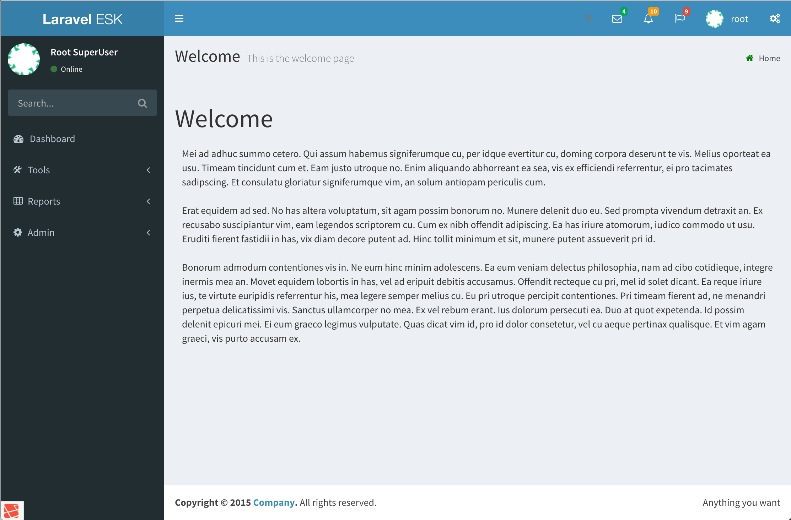

									<div class="row">
										<div class="12u">

											<p>LESK comes right out of the box packed with features and a combination of the best-curated packages pre-configured to work together and offer a flexible and powerful framework to start any project. Take a look at the screen shot below and the list of features and packages underneath it:</p>

											<span class="image main"></span>

											<article>
												<ul class="simple">
													<li>Based on Laravel 5.1 <a href="https://en.wikipedia.org/wiki/Long-term_support">LTS</a>, provides a solid and stable base with a predictable support timeline.</li>
													<li>Fully themeable engine using <a href="https://github.com/yaapis/Theme">yaapis/Theme</a>.</li>
													<li>Includes 3 themes based on <a href="https://github.com/almasaeed2010/AdminLTE">almasaeed2010/AdminLTE</a>.</li>
													<li>Custom Error pages provided, that can be easily customised:
														<ul class="simple">
															<li>403: Forbidden access.</li>
															<li>404: Page not found.</li>
															<li>500: Internal server error.</li>
														</ul>
													</li>
													<li>Context sensitive help.</li>
													<li>Authentication &amp; Authorization.
														<ul class="simple">
															<li>User authentication using Laravel's default model and middleware.</li>
															<li>Role based authorization using <a href="https://github.com/zizaco/entrust">zizaco/entrust</a>.
																<ul class="simple">
																	<li>User login.</li>
																	<li>User registration.</li>
																	<li>Reset forgotten password.</li>
																</ul>
															</li>
															<li>User based permissions.</li>
															<li>Dynamic assignment of permissions to application routes with matching authorization module.</li>
															<li>Full management of users, roles, permissions &amp; routes.</li>
															<li>Optional LDAP/AD authentication using <a href="https://github.com/sroutier/eloquent-ldap">sroutier/eloquent-ldap</a>, with options to:
																<ul class="simple">
																	<li>Automatically creates local account for LDAP/AD users during initial login.</li>
																	<li>Automatic assignment of users to local roles based on matching LDAP/AD group membership.</li>
																	<li>Automatically refresh role assignment on user login.</li>
																</ul>
															</li>
														</ul>
													</li>
													<li>Dynamic and security-aware menus system and breadcrumb trail. Menu editor included in the admin section</li>
													<li>Optional walled garden mode.</li>
													<li>Optional audit log of user actions.
														<ul class="simple">
															<li>Allows to "replay" some user actions.</li>
															<li>Allows hooking a custom data parser and blade partials to render the "replay" data.</li>
														</ul>
													</li>
													<li>Persistent settings using <a href="https://github.com/arcanedev/settings">arcanedev/settings</a> configurable from the user interface.</li>
													<li>Modular design with <a href="https://github.com/leskhq/lesk-modules">leskhq/lesk-modules</a> to easily customise and expand the feature set.</li>
													<li>Laravel <a href="https://github.com/Bosnadev/Repositories">Repositories</a>.</li>
													<li>Flash notifications using <a href="https://github.com/laracasts/flash">laracasts/flash</a>.</li>
													<li>Advanced datatables with <a href="http://www.trirand.com/blog/">jqGrid</a> and <a href="https://github.com/mgallegos/laravel-jqgrid">mgallegos/laravel-jqgrid</a>.</li>
													<li>CRUD widgets, datatable, grids, forms with <a href="https://github.com/zofe/rapyd-laravel">rapyd-laravel</a>.</li>
													<li>User profile with Gravatar integration using <a href="https://github.com/creativeorange/gravatar">creativeorange/gravatar</a>.</li>
													<li>Internationalization (i18n).</li>
													<li>Gulp and Elixir ready to compile and minimise Sass &amp; CoffeeScript.</li>
													<li>Laravel Exception Recorder and Notifier using <a href="https://github.com/tylercd100/lern">LERN</a> with admin pages to view logged errors.</li>
													<li>Bootstrap v3.3.4.</li>
													<li>Font-awesome v4.4.0.</li>
													<li>Ionicons v2.0.1.</li>
													<li>jQuery v2.1.4.</li>
													<li>jQuery UI v1.11.4, two themes included: Base and Trontastic.</li>
													<li>Select2 v4.0.0</li>
													<li>Select2 Bootstrap Theme v0.1.0-beta.4</li>
													<li>Development tools
														<ul class="simple">
															<li>Laravel <a href="https://github.com/barryvdh/laravel-debugbar">DebugBar</a>.</li>
															<li>Laravel <a href="https://github.com/barryvdh/laravel-ide-helper">IDE Helper</a>.</li>
															<li>Laravel <a href="https://github.com/jeroen-g/laravel-packager">Packager</a></li>
															<li><a href="https://github.com/etrepat/baum">Baum</a></li>
														</ul>
													</li>
												</ul>
											</article>

										</div>
									</div>

					              {% include footer.html prev_page="index" prev_title="Home" next_page="roadmap" next_title="Roadmap" %}


